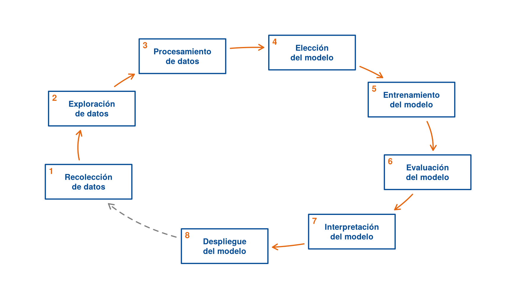
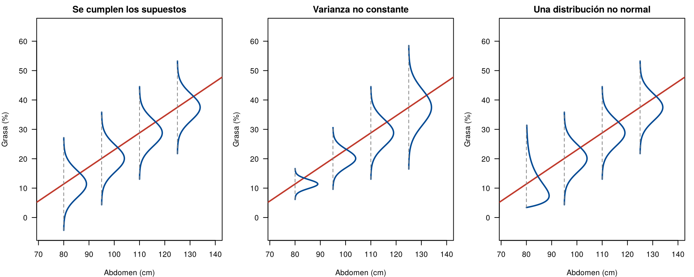

La correlación dice qué tan fuerte es la relación lineal entre el abdomen y la grasa, pero no responde dos preguntas prácticas:
El modelo de regresión lineal simple responde las dos: describe cómo cambia la media de una variable con otra y permite predecir. Esta página presenta el modelo y cómo se interpretan sus partes. Las páginas siguientes muestran cómo se estima y cómo se revisa.
Un modelo de regresión no empieza con lm() ni termina
con summary(). Es un ciclo de ocho pasos: si al evaluar o
al usar el modelo aparece un problema, se vuelve a los datos.
pasos <- c("Recolección\nde datos", "Exploración\nde datos", "Procesamiento\nde datos",
"Elección\ndel modelo", "Entrenamiento\ndel modelo", "Evaluación\ndel modelo",
"Interpretación\ndel modelo", "Despliegue\ndel modelo")
angulo <- seq(200, -100, length.out = 8) * pi / 180 # posiciones sobre un óvalo
cx <- 5 + 3.9 * cos(angulo)
cy <- 3 + 2.2 * sin(angulo)
par(mar = c(0, 0, 0, 0))
plot(NULL, xlim = c(0, 10), ylim = c(0, 6), axes = FALSE, xlab = "", ylab = "", asp = 1)
# cajas con el nombre de cada paso
rect(cx - 0.95, cy - 0.38, cx + 0.95, cy + 0.38, col = "white", border = "#034A94", lwd = 2)
text(cx, cy, pasos, col = "#034A94", font = 2, cex = 0.85)
# flechas entre pasos consecutivos, siguiendo el óvalo y sin entrar en las cajas
fuera <- function(x, y) {
!sapply(seq_along(x), function(i) any(abs(x[i] - cx) < 1.05 & abs(y[i] - cy) < 0.48))
}
for (k in 1:8) {
a1 <- angulo[k]
a2 <- if (k < 8) angulo[k + 1] else angulo[1] - 2 * pi
t <- seq(a1, a2, length.out = 200)
xs <- 5 + 3.9 * cos(t); ys <- 3 + 2.2 * sin(t)
quedan <- fuera(xs, ys)
xs <- xs[quedan]; ys <- ys[quedan]
color <- if (k < 8) "#E4660E" else "gray50"
lines(xs, ys, col = color, lwd = 2, lty = if (k < 8) 1 else 2)
m <- length(xs)
arrows(xs[m - 1], ys[m - 1], xs[m], ys[m], length = 0.1, col = color, lwd = 2)
}
text(cx - 0.82, cy + 0.24, 1:8, col = "#E4660E", font = 2, cex = 0.9) # número del paso
Pasos para construir un modelo de regresión lineal simple.
| Paso | Qué se hace | En el caso de la grasa corporal | Dónde se ve |
|---|---|---|---|
| 1. Recolección de datos | Definir la población, las variables y cómo se miden | 252 hombres; grasa por pesaje bajo el agua y abdomen con cinta métrica | Correlación de Pearson; la forma de recoger los datos decide la independencia (Supuestos del modelo) |
| 2. Exploración de datos | Graficar y resumir antes de modelar | Gráfico de dispersión, correlación de 0.81 | Correlación de Pearson, Spearman y Kendall |
| 3. Procesamiento de datos | Corregir errores, unidades y valores imposibles | Peso en kg y estatura en cm; un hombre con 0 % de grasa y otro con 74.9 cm de estatura | Organizar los datos, Puntos influyentes |
| 4. Elección del modelo | Decidir la respuesta, la variable explicativa y la forma de la relación | Grasa según abdomen, en línea recta | Esta página y Transformaciones |
| 5. Entrenamiento del modelo | Estimar los coeficientes con los datos | Mínimos cuadrados con lm() |
Estimación de los coeficientes |
| 6. Evaluación del modelo | Revisar los supuestos, el ajuste y los puntos influyentes | Residuales, \(R^2\), la observación 39 | Pruebas, intervalos y R², Revisión de los supuestos, Puntos influyentes |
| 7. Interpretación del modelo | Explicar los coeficientes y su incertidumbre | 0.58 puntos de grasa por cada centímetro de abdomen, con su intervalo | Esta página y Pruebas, intervalos y R² |
| 8. Despliegue del modelo | Usar el modelo con casos nuevos y vigilar que siga sirviendo | Predecir la grasa de un paciente a partir de su abdomen, dentro del rango de los datos | Estimación de la media y predicción |
Si la evaluación muestra un problema (una curva, una varianza que cambia, un punto influyente), se regresa a los pasos 3 o 4. Si al usar el modelo con casos nuevos las predicciones fallan, se regresa a la recolección: puede que la población haya cambiado o que falte una variable.
Se tienen \(n\) pares de observaciones \((x_i, y_i)\). La variable \(y\) es la respuesta (la grasa) y \(x\) es la variable explicativa (el abdomen). El modelo de regresión lineal simple se puede escribir de dos formas. En las dos:
La respuesta se escribe como la suma de una parte determinística, \(\beta_0 + \beta_1 x_i\), y un error aleatorio \(\varepsilon_i\) con distribución normal, media cero y varianza constante:
\[ Y_i = \beta_0 + \beta_1 x_i + \varepsilon_i, \qquad \varepsilon_i \sim N(0, \sigma^2) \]
Los errores son la diferencia entre los valores observados \(Y_i\) y la verdadera recta de la población. No son observables, porque dependen de \(\beta_0\) y \(\beta_1\), que son desconocidos. Lo que se observa son los residuales, que se calculan con la recta estimada (página Estimación de los coeficientes).
La respuesta se modela directamente como una variable aleatoria normal cuya media depende de \(x_i\) y cuya varianza es constante:
\[ Y_i \mid x_i \sim N(\mu_i, \sigma^2), \qquad \mu_i = E(Y_i \mid x_i) = \beta_0 + \beta_1 x_i \]
Las dos formas dicen lo mismo. En el caso de la unidad:
\[ \text{grasa}_i \sim N(\mu_i, \sigma^2), \qquad \mu_i = \beta_0 + \beta_1 \, \text{abdomen}_i \]
o, de forma equivalente, \(\text{grasa}_i = \beta_0 + \beta_1 \, \text{abdomen}_i + \varepsilon_i\), con \(\varepsilon_i \sim N(0, \sigma^2)\).
En las dos formas, el modelo tiene tres parámetros: \(\theta = (\beta_0, \beta_1, \sigma^2)\). Para estimarlos se usan dos métodos: mínimos cuadrados y máxima verosimilitud (página Estimación de los coeficientes).
| Parte | Nombre | Qué representa |
|---|---|---|
| \(\beta_0 + \beta_1 x\) | Recta de regresión | La media de \(Y\) para los individuos con ese valor de \(x\) |
| \(\beta_0\) | Intercepto | La media de \(Y\) cuando \(x = 0\) |
| \(\beta_1\) | Pendiente | Cuánto cambia la media de \(Y\) cuando \(x\) aumenta en una unidad |
| \(\varepsilon_i\) | Error | La diferencia entre \(Y_i\) y la media de su grupo: lo que la recta no explica |
La expresión \(E(Y \mid x) = \beta_0 + \beta_1 x\) se lee: la media de \(Y\) para un valor dado de \(x\) es una recta. No dice que cada hombre esté sobre la recta. Dice que, entre todos los hombres con un abdomen de 110 cm, la grasa promedio es \(\beta_0 + 110\,\beta_1\).
Se supone que los errores son independientes e idénticamente distribuidos (i.i.d.):
\[ \varepsilon_i \overset{\text{i.i.d.}}{\sim} N(0, \sigma^2), \qquad i = 1, 2, \ldots, n \]
El supuesto se plantea sobre los errores. Como el análisis es condicional a los valores observados de \(x\), que los errores sean independientes equivale a que las respuestas \(Y_1, \ldots, Y_n\) sean independientes dado \(x\). Las \(Y_i\) no son idénticamente distribuidas: cada una tiene su propia media, \(\beta_0 + \beta_1 x_i\). Por eso los supuestos se revisan con los residuales y no con la distribución de \(Y\) sola: un histograma de la grasa mezcla hombres con abdómenes distintos y no tiene por qué parecerse a una normal.
El modelo completo incluye cuatro supuestos sobre los errores \(\varepsilon_i\):
| Supuesto | Qué dice | Qué significa en el ejemplo |
|---|---|---|
| Media cero | \(E(\varepsilon_i \mid x_i) = 0\) | La recta pasa por la media de cada grupo: la relación es lineal |
| Varianza constante | \(\text{Var}(\varepsilon_i \mid x_i) = \sigma^2\) | La dispersión de la grasa alrededor de la recta es la misma con 80 o con 120 cm de abdomen |
| Independencia | Los errores no están relacionados entre sí | Lo que pasa con un hombre no afecta a otro |
| Normalidad | \(\varepsilon_i \sim N(0, \sigma^2)\) | Para cada abdomen, la grasa sigue una distribución normal alrededor de la recta |
Juntos se resumen así: para cada valor de \(x\), \(Y \sim N(\beta_0 + \beta_1 x, \; \sigma^2)\). El modelo tiene tres parámetros: \(\beta_0\), \(\beta_1\) y \(\sigma^2\).
La figura muestra la idea con valores inventados, parecidos a los del caso de la grasa. Permite ver tres cosas:
Los otros dos paneles muestran qué pasa cuando falla alguno de los supuestos: en el del centro, las distribuciones de la izquierda son más angostas que las de la derecha (la varianza no es constante); en el de la derecha, la primera distribución es asimétrica, parecida a una gamma, y no a una normal.
b0 <- -35; b1 <- 0.58; sigma <- 4.5
x0 <- c(80, 95, 110, 125)
par(mfrow = c(1, 3), mar = c(4, 4, 2, 1))
casos <- c("Se cumplen los supuestos", "Varianza no constante", "Una distribución no normal")
for (caso in 1:3) {
plot(NULL, xlim = c(72, 140), ylim = c(-5, 65), las = 1, main = casos[caso],
xlab = "Abdomen (cm)", ylab = "Grasa (%)")
abline(b0, b1, col = "#C0392B", lwd = 2)
for (k in seq_along(x0)) {
media <- b0 + b1 * x0[k]
desv <- if (caso == 2) c(1.5, 3, 4.5, 6)[k] else sigma
yy <- seq(media - 3.5 * desv, media + 3.5 * desv, length.out = 200)
dens <- dnorm(yy, media, desv)
if (caso == 3 && k == 1) { # gamma con la misma media, asimétrica a la derecha
yy <- seq(media - 8, media + 20, length.out = 200)
dens <- dgamma(yy - (media - 8), shape = 2, scale = 4)
}
lines(x0[k] + 9 * dens / max(dens), yy, col = "#034A94", lwd = 2)
segments(x0[k], min(yy), x0[k], max(yy), lty = 2, col = "gray50")
}
}
Distribución de Y para varios valores de x. Izquierda: se cumplen los supuestos. Centro: la varianza no es constante. Derecha: una distribución no es normal.
Los supuestos se revisan con los datos en la página Revisión de los supuestos, y la página Supuestos del modelo explica qué pasa cuando no se cumplen.
Más adelante se verá que la recta estimada con los datos es, aproximadamente,
\[ \widehat{\text{grasa}} = -35.2 + 0.585 \times \text{abdomen}. \]
La pendiente. Entre dos grupos de hombres cuyo abdomen difiere en 1 cm, la grasa promedio difiere en 0.585 puntos porcentuales. Con 10 cm de diferencia, la grasa promedio difiere en 5.85 puntos.
Tres cuidados al interpretar la pendiente:
El intercepto. Matemáticamente, es la grasa promedio de los hombres con 0 cm de abdomen. Ese grupo no existe: el abdomen más pequeño en los datos es de 69.4 cm. El intercepto de −35.2 % no tiene interpretación; solo ubica la recta. Esto pasa con frecuencia y no es un problema del modelo.
Si se quiere un intercepto con sentido, se centra la variable explicativa: se le resta un valor de referencia. Con el abdomen centrado en 90 cm, el intercepto es la grasa promedio de los hombres con 90 cm de abdomen:
Los datos se descargan aquí:
grasa.csv. Guarde el archivo en la
carpeta data de su proyecto de
RStudio.
grasa <- read.csv("data/grasa.csv")
grasa$abdomen90 <- grasa$abdomen - 90
coef(lm(grasa ~ abdomen, data = grasa))(Intercept) abdomen
-35.1966077 0.5848905 coef(lm(grasa ~ abdomen90, data = grasa))(Intercept) abdomen90
17.4435397 0.5848905 La pendiente no cambia. El nuevo intercepto, 17.4 %, es la grasa promedio esperada con un abdomen de 90 cm.
| Uso | Pregunta | Dónde se ve |
|---|---|---|
| Describir | ¿Cuánto cambia la media de \(y\) con \(x\)? | Pruebas, intervalos y R² |
| Estimar una media | ¿Cuál es la grasa promedio de los hombres con 110 cm de abdomen? | Estimación de la media y predicción |
| Predecir | ¿Cuánta grasa tendrá un hombre nuevo con 110 cm de abdomen? | Estimación de la media y predicción |
Estimar una media y predecir un valor individual parecen lo mismo, pero no lo son: la predicción es mucho menos precisa, porque además de la incertidumbre de la recta incluye la variación de una persona a otra.
Interpolar y extrapolar. El modelo se ajusta con abdómenes entre 69.4 y 148.1 cm, y la mayoría está entre 80 y 110 cm. Usar la recta dentro de ese rango es interpolar. Usarla fuera es extrapolar: nada garantiza que la relación siga siendo recta. Con un abdomen de 55 cm, la recta da
-35.2 + 0.585 * 55[1] -3.025un porcentaje de grasa negativo, que es imposible. La recta funciona en el rango de los datos y no se debe llevar más allá.
Asociación y causa. Los datos son observacionales: nadie asignó el tamaño del abdomen. Una relación fuerte entre dos variables no prueba que una cause la otra. Aquí, si hay una causa, va en el sentido contrario al de la recta: la grasa acumulada aumenta la circunferencia del abdomen, y no al revés. En otros casos, una tercera variable (la edad, el nivel socioeconómico) explica las dos. Para hablar de causa se necesita un diseño experimental o un análisis que controle las otras variables, que se estudia en la regresión múltiple.
| Problema | Causa | Solución |
|---|---|---|
| Interpretar la pendiente como el cambio de cada persona | El modelo describe medias de grupos | Hablar de “en promedio, entre hombres que difieren en 1 cm” |
| Interpretar un intercepto fuera del rango de \(x\) | \(x = 0\) no está en los datos | Decir que no tiene interpretación, o centrar \(x\) |
| Escribir la ecuación estimada con error: \(\hat{y} = b_0 + b_1 x + \varepsilon\) | Se confunde el modelo con la recta estimada | El modelo lleva \(\varepsilon\); la recta estimada no |
| Usar la recta fuera del rango de los datos | Se supone que la relación sigue igual | Limitar el uso al rango observado de \(x\) |
| Concluir que \(x\) causa \(y\) | Los datos son observacionales | Hablar de asociación |
Con la recta \(\widehat{\text{grasa}} = -35.2 + 0.585 \times \text{abdomen}\), ¿cuál es la diferencia en la grasa promedio entre los hombres con 85 cm y con 105 cm de abdomen? ¿Cuál es la grasa promedio estimada de los hombres con 105 cm?
La diferencia es \(0.585 \times 20 = 11.7\) puntos porcentuales. Con 105 cm, la grasa promedio estimada es \(-35.2 + 0.585 \times 105 = 26.2\) %.
Si el abdomen se midiera en pulgadas (1 pulgada = 2.54 cm), ¿cuánto
valdría la pendiente? Compruébelo con lm().
coef(lm(grasa ~ I(abdomen / 2.54), data = grasa)) (Intercept) I(abdomen/2.54)
-35.196608 1.485622 Una pulgada son 2.54 cm, así que la pendiente se multiplica por 2.54: \(0.585 \times 2.54 = 1.49\) puntos por pulgada. La pendiente depende de las unidades de \(x\) y de \(y\).
¿En cuál de estos casos se puede usar el modelo con confianza: un hombre con 92 cm de abdomen, un hombre con 160 cm, una mujer con 92 cm?
Solo en el primero. 160 cm está fuera del rango de los datos (extrapolación). Una mujer no pertenece a la población estudiada: los datos son de hombres, y la distribución de la grasa es distinta en las mujeres, así que la recta puede no aplicar aunque 92 cm esté en el rango.
Última revisión: 9 de noviembre de 2026.